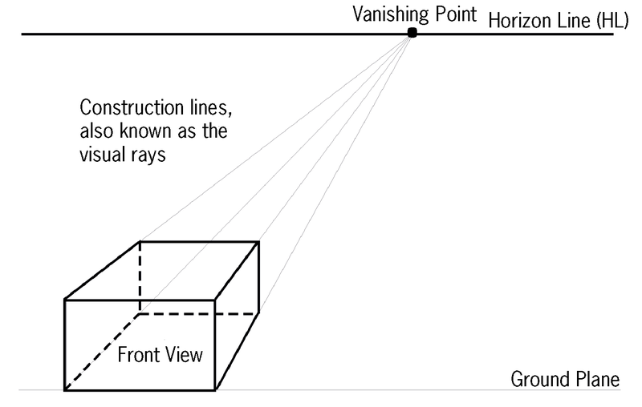
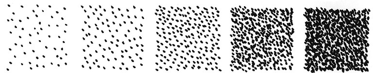

<div class="container">
  <div id="contents" class="col-md-12 main-content"><h1 xmlns="http://www.w3.org/1999/xhtml" id="toc-id-14">Perspective drawing</h1>

 

<figcaption xmlns="http://www.w3.org/1999/xhtml">Figure 1: Everything we see around us is
in perspective.</figcaption>


<figcaption xmlns="http://www.w3.org/1999/xhtml">Figure 2: Where are
the vanishing points for each box?</figcaption>


<figcaption xmlns="http://www.w3.org/1999/xhtml">Figure 3</figcaption><li xmlns="http://www.w3.org/1999/xhtml" class="x--Body-investigation-hanging para-style-override-38">
<ol><li>To make a double vanishing point perspective drawing of a
box, you can start bydrawing a horizon line and one
vertical edge of the box as shown below.</li>

<li class="x--Body-investigation-hanging-a-">Then draw
construction lines from the top and bottom of the vertical edge
to two vanishing points on the horizon line.</li>

</ol><figure>


<figcaption>Figure 4</figcaption></figure></li>
<li xmlns="http://www.w3.org/1999/xhtml" class="x--Body-investigation-hanging">
<ol><li>Once you have done this, you have to mark off another edge of the block on
the construction lines as indicated in Figure 5 at A and B.</li>

<li class="x--Body-investigation-hanging-a- para-style-override-5">From points A and B, draw construction lines to vanishing point 2.
<figure>


<figcaption>Figure 5</figcaption></figure></li>


</ol></li>
<li xmlns="http://www.w3.org/1999/xhtml" class="x--Body-investigation-hanging">
<ol><li>Now mark off
another edge of the block on the construction lines going to
vanishing point 2 at C and D as in Figure 6.</li>

<li class="x--Body-investigation-hanging-a-">Draw
construction lines from points C and D to vanishing point
1.</li>
</ol><figure>


<figcaption>Figure 6</figcaption></figure></li>

<li xmlns="http://www.w3.org/1999/xhtml" class="x--Body-investigation-hanging para-style-override-18">Make
your own double vanishing point perspective drawing of a block
below. Draw in your solid lines, as indicated on the block
drawing on page 46.</li>
 

<figcaption xmlns="http://www.w3.org/1999/xhtml">Figure 7</figcaption><li xmlns="http://www.w3.org/1999/xhtml" class="x--Body-investigation-hanging">It is
best to draw the block first, without the cut-out, as shown
below.<figure>

 

<figcaption>Figure 8</figcaption></figure></li>
<li xmlns="http://www.w3.org/1999/xhtml" class="x--Body-investigation-hanging">
<span>Then
m</span>ark the cut-out, as shown below.<figure>

 

<figcaption>Figure 9</figcaption></figure></li>

<li xmlns="http://www.w3.org/1999/xhtml" class="x--Body-investigation-hanging para-style-override-18">Make
and complete your own double vanishing point perspective
drawing of the object in Figure 7. Draw in solid lines where
necessary.    <p></p></li>

<b xmlns="http://www.w3.org/1999/xhtml">perspective</b> to make the picture
look more life-like or real.<b xmlns="http://www.w3.org/1999/xhtml">shading</b>. Shading is
a way of showing that something is a <b xmlns="http://www.w3.org/1999/xhtml">three-dimensional</b> shape, instead
of a <b xmlns="http://www.w3.org/1999/xhtml">two-dimensional</b>
shape.

<figcaption xmlns="http://www.w3.org/1999/xhtml">Figure 10a: a circle (two-dimensional)</figcaption>


<figcaption xmlns="http://www.w3.org/1999/xhtml"> Figure 10b: a sphere  (three-dimensional)</figcaption>

<figcaption xmlns="http://www.w3.org/1999/xhtml">Figure 11: The
position of light shining on the cube determines which parts
will be darker or lighter. The position of the light on these
cubes is shown by the red arrows.</figcaption>

<figcaption xmlns="http://www.w3.org/1999/xhtml">Figure 12: Different shades created by
hatching</figcaption> 

<figcaption xmlns="http://www.w3.org/1999/xhtml">Figure 13:
Different shades created by cross-hatching</figcaption><span xmlns="http://www.w3.org/1999/xhtml">Instead of
dra</span>wing lines, you can use your pen, pencil or any other
drawing tool to make dots for shading. The cl<span xmlns="http://www.w3.org/1999/xhtml">oser the
dots are together, the darker the shade will be.</span>
 

<figcaption xmlns="http://www.w3.org/1999/xhtml">Figure 14:
Different shades created by dots</figcaption>


<figcaption xmlns="http://www.w3.org/1999/xhtml">Figure 15: Different shades created by
an ink wash and a brush</figcaption><figcaption xmlns="http://www.w3.org/1999/xhtml">Figure 16: A sphere</figcaption><figcaption xmlns="http://www.w3.org/1999/xhtml">Figure 17: A cube</figcaption><figcaption xmlns="http://www.w3.org/1999/xhtml">Figure 18: A cylinder</figcaption><figcaption xmlns="http://www.w3.org/1999/xhtml">Figure 19: A cone</figcaption> 

<figcaption xmlns="http://www.w3.org/1999/xhtml">Figure 20: Portrait
of a man in a suit</figcaption><li xmlns="http://www.w3.org/1999/xhtml" class="x--Body-investigation-hanging para-style-override-14">Create 5 different shades in the block below using one of the   shading techniques you've learnt about.
</li>
<li xmlns="http://www.w3.org/1999/xhtml" class="x--Body-investigation-hanging--1-3- para-style-override-79">Figure 21 is a drawing that consists of lines and shading. It
shows a tree, a house and a car, drawn by combining different
basic shapes</li>


<figcaption xmlns="http://www.w3.org/1999/xhtml">Figure 21</figcaption><tbody xmlns="http://www.w3.org/1999/xhtml"><tr class="Row-Column-161"><td class="None">
<p class="x--Title-Chapter-Number para-style-override-3" xml:lang="en-GB">
<span>
</span> </p>
</td>
</tr></tbody><span xmlns="http://www.w3.org/1999/xhtml" class="Basic-Graphics-Frame">
</span> 
  </div>
</div>